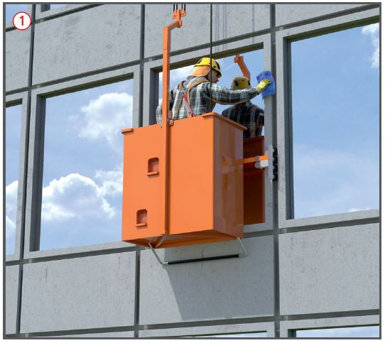
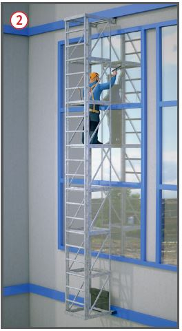

Gefährdungen
- Bei mangelhaften Sicherungsmaßnahmen
an hochgelegenen
Arbeitsplätzen auf Befahranlagen
kann es zu Absturzunfällen
kommen. Beeinträchtigungen
durch Klimaeinflüsse, z. B. Wind,
Gewitter sind zu berücksichtigen.
Allgemeines
- Fassadenbefahranlagen sind
Einrichtungen, die in der Regel
zum Gebäude gehören und am
Gebäude verbleiben, im Gegensatz
zu Arbeitskörben, Arbeitssitzen
und Arbeitsbühnen.
Schutzmaßnahmen
- Beim Betreiber der Fassadenbefahranlage über den betriebssicheren Zustand informieren (z. B. letzte Prüfung).
- Anlagen dürfen nur von eingewiesenen Personen benutzt werden.
- Betriebsanleitung beachten.
- Angegebene zulässige Belastung durch Personen und Material nicht überschreiten.
- Fassadenbefahranlagen nur über sicher begehbare Verkehrswege betreten. An Einstiegen müssen wirksame Einrichtungen gegen Absturz vorhanden sein.
- Während der Benutzung von Fassadenbefahranlagen darunter liegende Arbeitsbereiche und Verkehrswege freihalten und absperren.
- Bei Mängeln, die die Betriebssicherheit beeinträchtigen, den Betrieb einstellen und die Mängel dem Betreiber mitteilen.
Zusätzliche Hinweise für Fassadenaufzüge
- Fassadenaufzüge nur benutzen, wenn der Aufzugswärter des Betreibers erreichbar ist.
- Beschäftigte im Arbeitskorb
zusätzlich mittels PSA gegen
Absturz sichern
 .
.

Zusätzliche Hinweise für bewegliche Steigleitern
- Bewegliche Steigleitern mit Innenaufstieg nicht von außen besteigen.
- Bewegliche Steigleitern gegen unbeabsichtigtes Verfahren sichern, z. B. durch Feststellvorrichtung
 .
.
- Besteht beim Besteigen und Arbeiten auf beweglichen Steigleitern Absturzgefahr, sind die Beschäftigten durch PSA gegen Absturz zu sichern. Vorhandene Steigschutzeinrichtungen sind zu benutzen.
07/2021